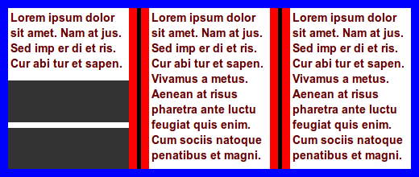

Float figure to top of natural column:
.figure { float: top }

This module describes features often used in printed publications. Figures and photos are often moved to the top or bottom of columns and pages, along with their captions. Some elements (e.g., call-outs) push aside other content in the flow of text, and sometimes one column is given a different styling than others. This draft describes how to achieve these effects, both on paper and screens.
This WD contains functionality that the CSS WG finds interesting and useful. The described functionality used to be part of the [[GCPM]] draft.
[If you keep the <!--comment--> the table of contents will be included here automatically.]
(This section is not normative.)
This module describes features often used in printed publications. Figures and photos are often moved to the top or bottom of columns and pages, along with their captions. Some elements (e.g., call-outs) push aside other content in the flow of text, and sometimes one column is given a different styling than others. This draft describes how to achieve these effects, both on paper and screens.
In page-based layouts, images and figures are often displayed at the top or bottom of pages. This specificaton adds new keywords on the 'float' property to create page floats. A page float can float inside its natural column/page, or its placement can be deferred to a following column/page with the float-defer properties. Page floats can be set to span several columns, thereby supporting commonly used newspaper layouts. New values on the 'clear' property adds further ways of refining layouts with page floats.
Not all multicol elements are constrained by the page box. Therefore, a more accurate term for page floats may be column floats as all of them are constrained by the column box. However, in most cases, page floats seems like a better term.
These new keywords on 'float' have been added:
Makes the element float to the top or bottom if it naturally appears within a certain distance from the top or bottom. The length value(s) specifies the maxium distance from the top/bottom that an element must be within in order to be floated; one length value specifies the distance from both the top and the bottom, two length values specify the distance from the top and bottom, respectively.
The optional keyword value specifies where the element is floated: top, bottom, or the nearest of the two. The initial value is 'near'. If 'near' is in effect and the element is within the specified distance both from the top and the bottom, bottom wins.
An element is considered to be a float if it has a snap() value, even if the element does not appear within the specified distance. This way, it can be determined whether an element is float or not without laying out the document.
These new keywords only apply in paged media; in continous media declarations with these keywords are ignored.
Elements with any of these new keywords are called 'page floats'. Each page float has a natural column, which is the column where the element would have started to appears it it was not a float. Also, each page float has a natural page, which is the page where the element would have started if the was not a float. Unless other constrained by lack of space or other float-* properties, page floats should appear in their natural column on the natural page.
Float figure to top of natural column:
.figure { float: top }
.figure { float: top; width: 50% }

In this example, a figure naturally appears close to a column break. There is not enough space for the figure in the first column, and it is therefore placed in the second column, leaving white space at the bottom of the first column.

To avoid the white space, the image can be floated to the nearest edge (in the block direction):
.figure { float: snap }
In this example, the figure is already at the nearest edge, so it does not move. However, page floats allow subsequent content to be displayed before the page float and the white space can therefore be filled:
In this example, two figures naturally appear in the text flow:

A typographer would typically try to avoid single lines of text above/below figures, which can be achieved with:
div.figure { float: snap(1.5em) }
The length value specifies the reach of the snap function; in this example the second figure is affected, but not the first.
In this example, two figures naturally appear in the text flow:
To make the figures snap to the nearest edges, this code can be applied:
div.figure { float: snap(2.5em) }
The resultant rendering is:

Float figure to top of the natural column, spanning all columns:
.figure { float: top; column-span: all }

In this example, tables will snap to the top/bottom if the top/bottom of the border box is closer than '3em' from the top/bottom of the page/column.
table { float: snap }
table { float: snap(3em) }
table { float: snap(3em, bottom) }
table { float: snap(3em 2em, bottom) }
Do numeric values, to represent line numbers, make sense, like for orphans/widows?
The 'column-span' property is extended with integer values so that elements can span several columns. If the specified integer value is equal to, or larger than the number of columns in the multicol element, the number of columns spanned will be the same as if 'column-span: all' had been specified.
In this example, a commonly used newspaper layout is easily described:
body { columns: 3 }
img.A { column-span: 2; width: 100% } /* image spans two columns */
.one { column-span: 2 } /* lead paragraph spans two columns */

Further, the 'page' value is added to 'column-span' so that the page (and not the column or element) becomes the reference.
In this example, the footer is floated to the bottom of the last page (and not the bottom of the article element):
footer { float: bottom; column-span: page }
<article>
...
<footer>...<.footer>
</article>
An alternative way to express this would be to add a separate propertye, e.g., float-reference: column | multicol | page
A page float can be deferred to a following column/page with these new properties:
| Name: | float-defer-column |
| Value: | <integer> | last | none |
| Initial: | none |
| Applies to: | page floats |
| Inherited: | no |
| Percentages: | N/A |
| Media: | visual |
| Computed value: | specified value |
| Name: | float-defer-page |
| Value: | <integer> | last | none |
| Initial: | none |
| Applies to: | page floats |
| Inherited: | no |
| Percentages: | N/A |
| Media: | visual |
| Computed value: | specified value |
These properties specify whether page floats should appear in their natural column/page, or in a following column/page. Values are:
Float figure to the top of the column that follows the natural column:
.figure { float: top }
.figure { float-defer-column: 1 }
Float figure to the top of the next-to-last column:
.figure { float: top; float-defer-column: -1 }
Float figure to top of the last column of the multicol element on the current page:
.figure { float: top; float-defer-column: last }

In combination with 'column-span', the figure is floated to the top corner of the multicol element on that page:
.figure { float: top; column-span: 2; float-defer-column: last; width: 100% }

Float figure to the top of the second column, spanning two columns:
.figure {
float: top; column-span: 2;
float-defer-column: 1;
}

Float figure to the top right, leaving one full column:
.figure {
float: top; column-span: 2;
float-defer-column: -1;
}
Given that there are four columnn, the same layout would be achived with this code:
.figure {
float: top; column-span: 2;
float-defer-column: 1;
}
Float figure to the top of the first column on the next-to-last page:
.figure { float: top }
.figure { float-defer-page: -1 }
Float figure to the top of the next-to-last column on the next-to-last page:
.figure { float: top }
.figure { float-defer-column: -1 }
.figure { float-defer-page: -1 }
Float figure to the top of the last column on the natural page:
.figure { float: top }
.figure { float-defer-column: last }
Float figure to the last column on the last page:
.figure { float: top }
.figure { float-defer-column: last }
.figure { float-defer-page: last }
Zero is not a legal value.
Page floats may request to not be stacked, or to be the only page float on a page/column through new values on the 'clear' property:
In this example, the two figures may appear in the same column:
.figure { float: bottom; clear: none }
<div class=figure></div>
<div class=figure></div>

In this example, the two figures will appear in different columns:
.figure { float: bottom; clear: column }
<div class=figure></div>
<div class=figure></div>

In this example, the two figures may appear at the bottom of the same column due to clearing only at the top:
.figure { float: bottom; clear: top }
<div class=figure></div>
<div class=figure></div>
In this example, the two figures will appear in different columns due to clearing at the bottom:
.figure { float: bottom; clear: bottom }
<div class=figure></div>
<div class=figure></div>
In this example, the two figures end up the top corner of two different pages:
.figure { float: top; float-defer-column: last; clear: page }
<div class=figure></div>
<div class=figure></div>
In this example, the two figures request different positions, and they may therefore end up in the same column:
.figure.one { float: top; clear: top }
.figure.two { float: bottom; clear: bottom }
<div class="figure one"></div>
<div class="figure two"></div>
Two allow content to flow to the inside and outside of a page, these keywords are added to the 'float' property:
These new values do not create page floats, the are simply aliases for 'left' and 'right'.
.figure { float: outside }
Should there be a way to combine float: top/bottom with left/right?
Should there be a way to delete page floats that end up lonesome on pages?
| Name: | float-wrap |
| Value: | none | wrap |
| Initial: | none |
| Applies to: | page floats |
| Inherited: | no |
| Percentages: | N/A |
| Media: | visual |
| Computed value: | specified value |
This property indicates whether other content may wrap around a page float:
The 'intrude' value only works in combination with one of these keywords: 'left'/'right'/'top'/'bottom'/'top-corner'/'bottom-corner'.
img { float: top; column-span: 2; float-wrap: wrap; width: 120%; }
In this example, the image is wider than the column and will
therefore intrude into the neighboring column. At the bottom of the
middle column is a long word that is clipped in the middle of the
column gap.

| Name: | float-offset |
| Value: | <length> <length> ? |
| Initial: | 0 0 |
| Applies to: | floated elements |
| Inherited: | no |
| Percentages: | see prose |
| Media: | visual, paged |
| Computed value: | one or two absolute lengths |
This property pushes a float in opposite direction of the where it has been floated with 'float'. If one value is specified, it is the horizontal offset. If two values are specified, the first is the horizontal and the second is the vertical offset. If no vertical value has been specified, the vertical offset is set to zero.
This property can only influence a float along an axis it has been floated.
img {
float: left;
float-offset: 2em 3em;
}
In this example, the image is floated to the left. Therefore, 'float-offset' may only push the element in the horizontal direction, and the vertical value is ignored.
Negative values are allowed; a negative values will push the float in the same direction as it has been floated with 'float'
This property may move floats into other column than where they naturally appear.
img {
float: right;
float-offset: 5px;
}

Percentage values are computed according to this formula:
(containing-block-width - float-width) * percentage (containing-block-height - float-height) * percentage

.pullquote {
float: right;
float-offset: 50%; /* 50% centers the box */
}
When negative values are set on this property, the column gap is also part of the calculation:
((containing-block-width + 2 * column-gap) - float-width) * percentage
img {
float: top right;
float-offset: -50% 3em; /* 50% centers the box */
width: 120%;
}

img {
float: top right;
float-offset: -80% 2em;
width: 100%;
}

In many cases, the specified values on these properties cannot be honored.
.figure { float: top; float-defer-column: 1000 }
.figure { float: top; float-defer-column: -5 }
p { float: top; float-defer-page: last }
Page floats are processed in the order they appear in the source. However, the visual order of page floats may not ne the same as the source order.
.one { float: top; float-defer-page: last; column-span: all }
.two { float: top; clear: column }
<div class=one></div>
<div class=two></div>
In this example, the first element requests to appear on the last page, while the second element requests to appear in the natural column. If the natural column of the second element appears on a page before the last page, the second element will appear visually before the first.
.one { float: top; float-defer-page: last; column-span: all }
.two { float: top; clear: column }
<div class=one></div>
<div class=two></div>
If all content can fit on one page, the first page will also be the last page. The first element is processed first and is placed on top of the first page. Then the second element is processed. It reqests a clear top, somthing which is not possible on the first page. Therefore, a second page is created and the first element is moved there. Even if the first element requests to be on the last page, it will not appear there.
When resolving over-constrained layouts, the order of importance for defined goals are:
| Name: | clear-side |
| Value: | auto | both |
| Initial: | auto |
| Applies to: | floated elements |
| Inherited: | no |
| Percentages: | N/A |
| Media: | visual, paged |
| Computed value: | as specified |
This property declares if the side of a float should be cleared of content. Values have the following meaning:

.pullquote {
float: left;
float-offset: 50%;
clear-side: none;
}
Exclusions are often based on shapes found in images. In this specification, background image can carry the shape, around which text is wrapped. The new property 'background-exclude-level' indicates a level in the alpha channel of the background image(s) that defines the shape.
Here is an example that uses the background of the multicol element as a template for exclusions.

article {
padding: 4em;
columns: 15em;
background: url(nicecar.jpg);
background-exclude-level: 0.5;
}
article h1 { column-span: all } /* Bonneville Speedway */
This example is the same as the above, just with changed column widths.

article {
padding: 4em;
columns: 6em;
background: url(nicecar.jpg);
background-exclude-level: 0.5;
}
article h1 { column-span: all } /* Bonneville Speedway */
Background images can be repeated. Therefore exclusions based on images can be repeated.

article {
background: repeat-y url(zigzag.png);
background-exclude-level: 0.5;
}
article h1 {
column-span: all;
}
A new property. 'exclude-level', is introduced to allow wraps around the rendered content of the element.

#dropcaps {
font-size: 3em;
float: left;
exclude-level: 0.5;
margin-top: -0.2em;
}
<p><span id="dropcaps">Many</span> instances ...</p>
<p>The text ....</p>
Define behavior if both 'exclude-level' and 'background-exclude-level' is set.
Some kind of spacing behavior must be defined; 'exclude-margin' may be an option.
Define behavior if both 'exclude-level' and 'background-exclude-level' is set.
I suggest not having exclusions based in shapes in the first generation of exclusions; we may want to definde shapes for CSS in general (e.g., for borders), so we may want to wait until we have a holistic approach.

article::column(1) {
content-inside: circle(50%, 50%, 30%);
}
article::column(2) {
content-outside: polygon(x1, y1, x2, y2, x3, y3, ... xn, yn);
color: red;
}

article::column(1) {
content-outside: circle(x, y, z);
}
article::column(2) {
content-inside: polygon(x1, y1, x2, y2, x3, y3, ... xn, yn);
}
Regions are series of stylable boxes into which content can be poured. Columns are regions that are automatically generated to contain all the content of the the multicol element. By adding selectors for columns, columns can be styled and positioned and thereby escape the rigid patterns that columns naturally live in.
div.chapter::column(3) /* the 3rd column of the element */ div.chapter::column(2n) /* all even columns of the element */ div.chapter::column(3+) /* all columns but the 1st and 2nd */ div.chapter::column(2,2) /* second column on second page */ div.chapter::column(*,2) /* all columns on the second page */ div.chapter::column(1,*) /* the first column on all pages */
To underline the fact that columns are regions, the "region" keyword can be used as a substitute for "column".
div.chapter::region(3) /* the 3rd region of the element */ div.chapter::region(2n) /* all even regions of the element */ div.chapter::region(3+) /* all regions but the 1st and 2nd */ div.chapter::region(2,2) /* second region on second page */ div.chapter::region(*,2) /* all regions on the second page */ div.chapter::region(1,*) /* the first column on all pages */
In this example, the multicol layout is changed so that the image (which appears first in the markup) spans two columns and is floated to the top, thereby escaping its natural column. The first column, which holds the start of the textual content is also floated to the top, spanning two columns, and therefore ends up just under the image. When the first column/region is floated away, the second column will move into its space.
article { columns: 3 }
img { column-span: 2; width: 100%; float: top }
article::region(1) { /* selects column 1 */
column-span: 2;
float: top;
height: 3em; /* sets preferred height of region */
}
<article>
<img ...>
<p>... <p>... <p>...
</article>
div.chapter::region(1) {
transform: rotate(6.5deg);
}
div.chapter::region(2) {
transform: rotate(-5.5deg) translate(0, 40px);
}


article {
columns: 15em;
}
article::region(1-3) {
width: 15em;
height: 15em;
}
article::region(2-3) {
margin: 4em 0 0 -4em;
}

article {
columns: 15em;
}
acticle::region(1-3) {
height: 15em;
}
acticle::region(2-3) {
margin: 4em 0 0 -4em;
}
acticle::region(2) {
z-index: 1;
}
TBD
This document has been improved by Bert Bos, Michael Day, Melinda Grant, David Baron, Markus Mielke, Steve Zilles, Ian Hickson, Elika Etemad, Laurens Holst, Mike Bremford, Allan Sandfeld Jensen, Kelly Miller, Werner Donné, Tarquin (Mark) Wilton-Jones, Michel Fortin, Christian Roth, Brady Duga, Del Merritt, Ladd Van Tol, Tab Atkins Jr., Jacob Grundtvig Refstrup, James Elmore, Ian Tindale, Murakami Shinyu, Paul E. Merrell, Philip Taylor, Brad Kemper, Peter Linss, Daniel Glazman, Tantek Çelik, Florian Rivoal, Alex Mogilevsky, Simon Sapin, Cameron McCormack, Liam R E Quin, Peter Moulder, Morten Stenshorne, Rune Lillesveen, Lars Erik Bolstad, Anton Prowse, Michel Onoff
[Here will be inserted the file "normative.inc"]
[Here will be inserted the file "informative.inc"]